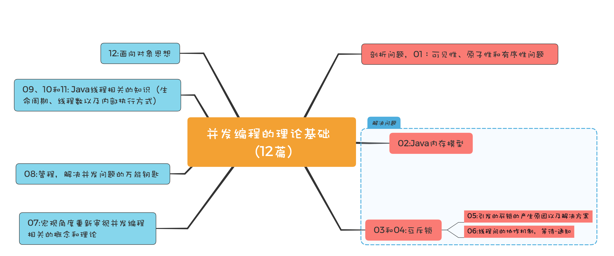

- 00 学习攻略 如何才能学好并发编程？.md.html
- 00 开篇词 你为什么需要学习并发编程？.md.html
- 01 可见性、原子性和有序性问题：并发编程Bug的源头.md.html
- 02 Java内存模型：看Java如何解决可见性和有序性问题.md.html
- 03 互斥锁（上）：解决原子性问题.md.html
- 04 互斥锁（下）：如何用一把锁保护多个资源？.md.html
- 05 一不小心就死锁了，怎么办？.md.html
- 06 用“等待-通知”机制优化循环等待.md.html
- 07 安全性、活跃性以及性能问题.md.html
- 08 管程：并发编程的万能钥匙.md.html
- 09 Java线程（上）：Java线程的生命周期.md.html
- 10 Java线程（中）：创建多少线程才是合适的？.md.html
- 11 Java线程（下）：为什么局部变量是线程安全的？.md.html
- 12 如何用面向对象思想写好并发程序？.md.html
- 13 理论基础模块热点问题答疑.md.html
- 14 Lock和Condition（上）：隐藏在并发包中的管程.md.html
- 15 Lock和Condition（下）：Dubbo如何用管程实现异步转同步？.md.html
- 16 Semaphore：如何快速实现一个限流器？.md.html
- 17 ReadWriteLock：如何快速实现一个完备的缓存？.md.html
- 18 StampedLock：有没有比读写锁更快的锁？.md.html
- 19 CountDownLatch和CyclicBarrier：如何让多线程步调一致？.md.html
- 20 并发容器：都有哪些“坑”需要我们填？.md.html
- 21 原子类：无锁工具类的典范.md.html
- 22 Executor与线程池：如何创建正确的线程池？.md.html
- 23 Future：如何用多线程实现最优的“烧水泡茶”程序？.md.html
- 24 CompletableFuture：异步编程没那么难.md.html
- 25 CompletionService：如何批量执行异步任务？.md.html
- 26 Fork_Join：单机版的MapReduce.md.html
- 27 并发工具类模块热点问题答疑.md.html
- 28 Immutability模式：如何利用不变性解决并发问题？.md.html
- 29 Copy-on-Write模式：不是延时策略的COW.md.html
- 3 个用户来信 打开一个新的并发世界.md.html
- 30 线程本地存储模式：没有共享，就没有伤害.md.html
- 31 Guarded Suspension模式：等待唤醒机制的规范实现.md.html
- 32 Balking模式：再谈线程安全的单例模式.md.html
- 33 Thread-Per-Message模式：最简单实用的分工方法.md.html
- 34 Worker Thread模式：如何避免重复创建线程？.md.html
- 35 两阶段终止模式：如何优雅地终止线程？.md.html
- 36 生产者-消费者模式：用流水线思想提高效率.md.html
- 37 设计模式模块热点问题答疑.md.html
- 38 案例分析（一）：高性能限流器Guava RateLimiter.md.html
- 39 案例分析（二）：高性能网络应用框架Netty.md.html
- 40 案例分析（三）：高性能队列Disruptor.md.html
- 41 案例分析（四）：高性能数据库连接池HiKariCP.md.html
- 42 Actor模型：面向对象原生的并发模型.md.html
- 43 软件事务内存：借鉴数据库的并发经验.md.html
- 44 协程：更轻量级的线程.md.html
- 45 CSP模型：Golang的主力队员.md.html
- 用户来信 真好，面试考到这些并发编程，我都答对了！.md.html
- 结束语 十年之后，初心依旧.md.html
- 捐赠
13 理论基础模块热点问题答疑
到这里，专栏的第一模块——并发编程的理论基础，我们已经讲解完了，总共12篇，不算少，但“跳出来，看全景”你会发现这12篇的内容基本上是一个“串行的故事”。所以，在学习过程中，建议你从一个个单一的知识和技术中“跳出来”，看全局，搭建自己的并发编程知识体系。
为了便于你更好地学习和理解，下面我会先将这些知识点再简单地为你“串”一下，咱们一起复习下；然后就每篇文章的课后思考题、留言区的热门评论，我也集中总结和回复一下。
那这个“串行的故事”是怎样的呢？
起源是一个硬件的核心矛盾：CPU与内存、I/O的速度差异，系统软件（操作系统、编译器）在解决这个核心矛盾的同时，引入了可见性、原子性和有序性问题，这三个问题就是很多并发程序的Bug之源。这，就是01的内容。
那如何解决这三个问题呢？Java语言自然有招儿，它提供了Java内存模型和互斥锁方案。所以，在02我们介绍了Java内存模型，以应对可见性和有序性问题；那另一个原子性问题该如何解决？多方考量用好互斥锁才是关键，这就是03和04的内容。
虽说互斥锁是解决并发问题的核心工具，但它也可能会带来死锁问题，所以05就介绍了死锁的产生原因以及解决方案；同时还引出一个线程间协作的问题，这也就引出了06这篇文章的内容，介绍线程间的协作机制：等待-通知。
你应该也看出来了，前六篇文章，我们更多地是站在微观的角度看待并发问题。而07则是换一个角度，站在宏观的角度重新审视并发编程相关的概念和理论，同时也是对前六篇文章的查漏补缺。
08介绍的管程，是Java并发编程技术的基础，是解决并发问题的万能钥匙。并发编程里两大核心问题——互斥和同步，都是可以由管程来解决的。所以，学好管程，就相当于掌握了一把并发编程的万能钥匙。
至此，并发编程相关的问题，理论上你都应该能找到问题所在，并能给出理论上的解决方案了。
而后在09、10和11我们又介绍了线程相关的知识，毕竟Java并发编程是要靠多线程来实现的，所以有针对性地学习这部分知识也是很有必要的，包括线程的生命周期、如何计算合适的线程数以及线程内部是如何执行的。
最后，在12我们还介绍了如何用面向对象思想写好并发程序，因为在Java语言里，面向对象思想能够让并发编程变得更简单。

并发编程理论基础模块思维导图
经过这样一个简要的总结，相信你此时对于并发编程相关的概念、理论、产生的背景以及它们背后的关系已经都有了一个相对全面的认识。至于更深刻的认识和应用体验，还是需要你“钻进去，看本质”，加深对技术本身的认识，拓展知识深度和广度。
另外，在每篇文章的最后，我都附上了一个思考题，这些思考题虽然大部分都很简单，但是隐藏的问题却很容易让人忽略，从而不经意间就引发了Bug；再加上留言区的一些热门评论，所以我想着将这些隐藏的问题或者易混淆的问题，做一个总结也是很有必要的。
- 用锁的最佳实践 ———–
例如，在《03 | 互斥锁（上）：解决原子性问题》和《04 | 互斥锁（下）：如何用一把锁保护多个资源？》这两篇文章中，我们的思考题都是关于如何创建正确的锁，而思考题里的做法都是错误的。
03的思考题的示例代码如下，synchronized (new Object()) 这行代码很多同学已经分析出来了，每次调用方法get()、addOne()都创建了不同的锁，相当于无锁。这里需要你再次加深一下记忆，“一个合理的受保护资源与锁之间的关联关系应该是N:1”。只有共享一把锁才能起到互斥的作用。
另外，很多同学也提到，JVM开启逃逸分析之后，synchronized (new Object()) 这行代码在实际执行的时候会被优化掉，也就是说在真实执行的时候，这行代码压根就不存在。不过无论你是否懂“逃逸分析”都不影响你学好并发编程，如果你对“逃逸分析”感兴趣，可以参考一些JVM相关的资料。
class SafeCalc {
long value = 0L;
long get() {
synchronized (new Object()) {
return value;
}
}
void addOne() {
synchronized (new Object()) {
value += 1;
}
}
}
04的思考题转换成代码，是下面这个样子。它的核心问题有两点：一个是锁有可能会变化，另一个是 Integer 和 String 类型的对象不适合做锁。如果锁发生变化，就意味着失去了互斥功能。 Integer 和 String 类型的对象在JVM里面是可能被重用的，除此之外，JVM里可能被重用的对象还有Boolean，那重用意味着什么呢？意味着你的锁可能被其他代码使用，如果其他代码 synchronized(你的锁)，而且不释放，那你的程序就永远拿不到锁，这是隐藏的风险。
class Account {
// 账户余额
private Integer balance;
// 账户密码
private String password;
// 取款
void withdraw(Integer amt) {
synchronized(balance) {
if (this.balance > amt){
this.balance -= amt;
}
}
}
// 更改密码
void updatePassword(String pw){
synchronized(password) {
this.password = pw;
}
}
}
通过这两个反例，我们可以总结出这样一个基本的原则：锁，应是私有的、不可变的、不可重用的。我们经常看到别人家的锁，都长成下面示例代码这样，这种写法貌不惊人，却能避免各种意想不到的坑，这个其实就是最佳实践。最佳实践这方面的资料推荐你看《Java安全编码标准》这本书，研读里面的每一条规则都会让你受益匪浅。
// 普通对象锁
private final Object
lock = new Object();
// 静态对象锁
private static final Object
lock = new Object();
- 锁的性能要看场景 ————
《05 | 一不小心就死锁了，怎么办？》的思考题是比较while(!actr.apply(this, target));这个方法和synchronized(Account.class)的性能哪个更好。
这个要看具体的应用场景，不同应用场景它们的性能表现是不同的。在这个思考题里面，如果转账操作非常费时，那么前者的性能优势就显示出来了，因为前者允许A->B、C->D这种转账业务的并行。不同的并发场景用不同的方案，这是并发编程里面的一项基本原则；没有通吃的技术和方案，因为每种技术和方案都是优缺点和适用场景的。
- 竞态条件需要格外关注 ————–
《07 | 安全性、活跃性以及性能问题》里的思考题是一种典型的竞态条件问题（如下所示）。竞态条件问题非常容易被忽略，contains()和add()方法虽然都是线程安全的，但是组合在一起却不是线程安全的。所以你的程序里如果存在类似的组合操作，一定要小心。
void addIfNotExist(Vector v,
Object o){
if(!v.contains(o)) {
v.add(o);
}
}
这道思考题的解决方法，可以参考《12 | 如何用面向对象思想写好并发程序？》，你需要将共享变量v封装在对象的内部，而后控制并发访问的路径，这样就能有效防止对Vector v变量的滥用，从而导致并发问题。你可以参考下面的示例代码来加深理解。
class SafeVector{
private Vector v;
// 所有公共方法增加同步控制
synchronized
void addIfNotExist(Object o){
if(!v.contains(o)) {
v.add(o);
}
}
}
- 方法调用是先计算参数 ————–
不过，还有同学对07文中所举的例子有疑议，认为set(get()+1);这条语句是进入set()方法之后才执行get()方法，其实并不是这样的。方法的调用，是先计算参数，然后将参数压入调用栈之后才会执行方法体，方法调用的过程在11这篇文章中我们已经做了详细的介绍，你可以再次重温一下。
while(idx++ < 10000) {
set(get()+1);
}
先计算参数这个事情也是容易被忽视的细节。例如，下面写日志的代码，如果日志级别设置为INFO，虽然这行代码不会写日志，但是会计算"The var1：" + var1 + ", var2:" + var2的值，因为方法调用前会先计算参数。
logger.debug("The var1：" +
var1 + ", var2:" + var2);
更好地写法应该是下面这样，这种写法仅仅是讲参数压栈，而没有参数的计算。使用{}占位符是写日志的一个良好习惯。
logger.debug("The var1：{}, var2:{}",
var1, var2);
- InterruptedException异常处理需小心 ——————————-
《 09 | Java线程（上）：Java线程的生命周期》的思考题主要是希望你能够注意InterruptedException的处理方式。当你调用Java对象的wait()方法或者线程的sleep()方法时，需要捕获并处理InterruptedException异常，在思考题里面（如下所示），本意是通过isInterrupted()检查线程是否被中断了，如果中断了就退出while循环。当其他线程通过调用th.interrupt().来中断th线程时，会设置th线程的中断标志位，从而使th.isInterrupted()返回true，这样就能退出while循环了。
Thread th = Thread.currentThread();
while(true) {
if(th.isInterrupted()) {
break;
}
// 省略业务代码无数
try {
Thread.sleep(100);
}catch (InterruptedException e){
e.printStackTrace();
}
}
这看上去一点问题没有，实际上却是几乎起不了作用。原因是这段代码在执行的时候，大部分时间都是阻塞在sleep(100)上，当其他线程通过调用th.interrupt().来中断th线程时，大概率地会触发InterruptedException 异常，在触发InterruptedException 异常的同时，JVM会同时把线程的中断标志位清除，所以这个时候th.isInterrupted()返回的是false。
正确的处理方式应该是捕获异常之后重新设置中断标志位，也就是下面这样：
try {
Thread.sleep(100);
}catch(InterruptedException e){
// 重新设置中断标志位
th.interrupt();
}
- 理论值 or 经验值 ————–
《10 | Java线程（中）：创建多少线程才是合适的？》的思考题是：经验值为“最佳线程=2 * CPU的核数 + 1”，是否合理？
从理论上来讲，这个经验值一定是靠不住的。但是经验值对于很多“I/O耗时 / CPU耗时”不太容易确定的系统来说，却是一个很好到初始值。
我们曾讲到最佳线程数最终还是靠压测来确定的，实际工作中大家面临的系统，“I/O耗时 / CPU耗时”往往都大于1，所以基本上都是在这个初始值的基础上增加。增加的过程中，应关注线程数是如何影响吞吐量和延迟的。一般来讲，随着线程数的增加，吞吐量会增加，延迟也会缓慢增加；但是当线程数增加到一定程度，吞吐量就会开始下降，延迟会迅速增加。这个时候基本上就是线程能够设置的最大值了。
实际工作中，不同的I/O模型对最佳线程数的影响非常大，例如大名鼎鼎的Nginx用的是非阻塞I/O，采用的是多进程单线程结构，Nginx本来是一个I/O密集型系统，但是最佳进程数设置的却是CPU的核数，完全参考的是CPU密集型的算法。所以，理论我们还是要活学活用。
总结
这个模块，内容主要聚焦在并发编程相关的理论上，但是思考题则是聚焦在细节上，我们经常说细节决定成败，在并发编程领域尤其如此。理论主要用来给我们提供解决问题的思路和方法，但在具体实践的时候，还必须重点关注每一个细节，哪怕有一个细节没有处理好，都会导致并发问题。这方面推荐你认真阅读《Java安全编码标准》这本书，如果你英文足够好，也可以参考这份文档。
最后总结一句，学好理论有思路，关注细节定成败。
欢迎在留言区与我分享你的想法，也欢迎你在留言区记录你的思考过程。感谢阅读，如果你觉得这篇文章对你有帮助的话，也欢迎把它分享给更多的朋友。
© 2019 - 2023 Liangliang Lee. Powered by gin and hexo-theme-book.